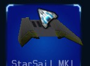
The standard entry level wing system is the StarSail.
It provides moderate performance for small ship frames and requires a very low level of assembly resources. Combined with a low cost, its features result in this wing and thruster set being a common choice for pilots who want to compromise on agility. This system includes the weakest thruster set available to mercenaries.
Assembly: 10
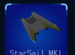
The standard entry level wing system is the StarSail.
It provides moderate performance for small ship frames and requires a very low level of assembly resources. Combined with a low cost, its features result in this wing and thruster set being a common choice for pilots who want to compromise on agility. This system includes the weakest thruster set available to mercenaries.
Assembly: 10
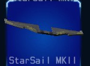
The StarSail MKII wing system is a minor increase in performance compared to the MKI, but it does offer its improvement at a minimal cost in assembly resources and credits. It works best on smaller frames, but is also useful on larger frames to recover needed assembly resources for pilots who want to reduce maneuverability for other options.
Assembly: 20
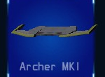
The Archer MK I is the entry level model of the medium wing classes. It provides a solid balance of low assembly resource use and maneuverability.
The 'Archer' group of wings are generally considered some of the best options for light and medium civilian frames. Their low costs is also an added benefit.
Assembly: 35
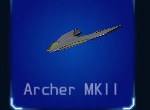
The Archer MKII wing is ideal for light and medium frames. It provides improved thruster performance needed for heavier frames and doesn't require a lot of assembly resources. Its original application was on Alliance military spacecraft and is now being sold in the civilian markets of Evochron.
Assembly: 55
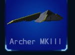
The Archer MKIII wing adds a one piece tail section to a revised Archer design, further improving agility.
A good upgrade for small and medium frames and a popular choice among pilot of some heavier frames.
Assembly: 70
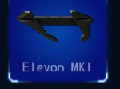
The Elevon MK1 wing is a unique design with side structures and a moderately powerful thruster system.
Designed primarily for space flight, its relatively small wing structures do still provide effective agility in atmospheres.
Assembly: 80
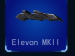
The Elevon MKII wing is a heavily redesigned version of the MKI. The side structures are removed while the wings have been extended further out to each side and include arched extensions. This version is recommended for pilots interested in improved atmospheric flight as well as a slight increase in thruster capability.
Assembly: 95
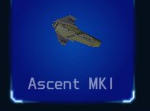
The Ascent MK1 wing is the entry level design for higher powered medium class wings and thrusters.
Its design features two overdrive pods for enhanced thruster capability, but its overall surface area is somewhat limited. This design is a popular choice among pilots of medium class ships looking for decent agility in open space.
Assembly: 110
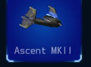
The Ascent MKII wing is a heavily redesigned version of the MKI. The overdrive pods are replaced with wing tip extensions housing new minature overdrive units while the wing structure itself has been reshaped and expanded for improved agility. This design is a popular choice for pilots looking for excellent all-around maneuverability.
Assembly: 120
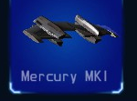
The Mercury MKI wing is designed to be a powerful open space dogfighting solution for medium and heavy class ships. It features four massive thruster overdrive units on a basic wing frame.
Some pilots will also install this wing and thruster system on lighter ships for racing and improved agility for combat evasion.
Assembly: 135
The Mercury MKII wing may look very minimal in comparison to other wing designs, but it features a revolutionary advancement previously only used in military applications. Mounted inside each wing is a compact and lightweight anti-gravity pod designed to outperform traditional overdrive units. The sleek design outperforms its bulky MKI predecessor.
Assembly: 150
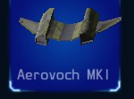
Named after the company that designed it, the
Aerovoch MKI was designed to provide the ultimate in overall performance and maneuverability. While large and heavy, its massive overdrive thruster pods more than make up for its weight. This wing and thruster system is the primary solution for many pilots of the heaviest civilian spacecraft.
Assembly: 170
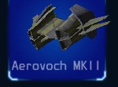
The Aerovoch MKII is effectively two MKI units put together. With not much room for improvement over the original design, it made sense to simply offer two MKI units put together for added capability.
Some pilots say the moderate increase in mass is worth it, others prefer the MKI design. Either way, it's difficult to deny this system's performance.
Assembly: 180